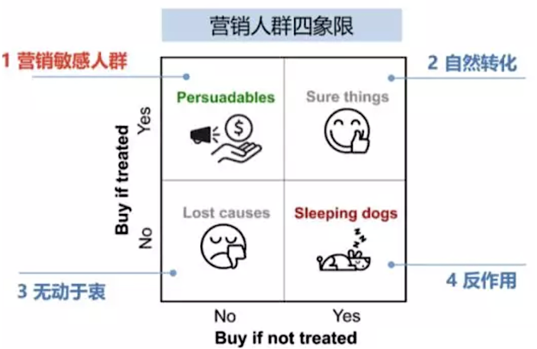
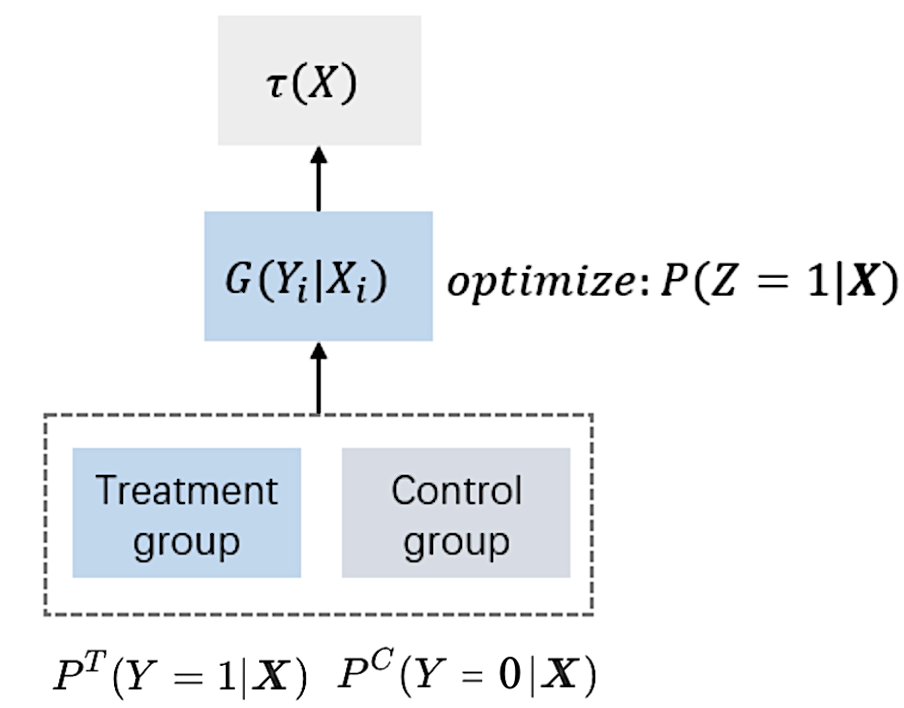

Causal Inference
因果推断和增益模型
绪论
在日常生活和数据分析中可以得到大量相关性的结论，我们通过各种统计模型、机器学习、深度学习模型，通过分析得到种种结论，但是这里面存在一个巨大的疑问就是，“相关性一定等于因果性吗？”图1.1为缅因州黄油消费量和离婚率的关系图，从图上可以看出这两个变量呈高度相关的关系，但是如果我们从因果的角度来阐释，说黄油消费导致了离婚，或者离婚导致了黄油出售，显然都非常荒谬。事实上，相关性通常是对称的，因果性通常是不对称的（单向箭头）。相关性不一定说明了因果性，但因果性一般都会在统计层面导致相关性。也即相关性$\neq$因果性。
图1.1 缅因州黄油消费量和离婚率的关系图
另外一个例子，在智能营销的发放优惠券场景下用户可分为如图1.2所示四类。建模时主要针对persuadables营销敏感人群，即给这部分人群发券可以增加人群购买欲望从而增加收益。要避免sleeping dogs人群，这类人群发放优惠券会产生发作用，即会降低人群的购买欲望。人群的区分需要明确是否因为发放优惠券才导致了购买行为，这是一个因果推断问题。预测发放优惠券带来的收益是一个增益模型。由此引出两个概念：
- 因果推断（causal inference）：即研究如何更加科学地识别变量间的因果关系，估算同一个体在干预和不干预（互斥情况下）不同输出的差异。
- 增益模型（uplift model）：需要预测某种干预增量（uplift）的模型，即干预动作（treatment）对用户响应行为（outcome）产生的效果。为了克服估算同一个体同时受到干预和不干预这一反事实的现状，增益模型强依赖于随机实验（将用户随机分配到实验组&对照组）的结果数据。
图1.2 营销人群分类
因果推断基础
以发放优惠券问题为例，建立以下因果推断模型：
- 输入变量$context \space x$：包含用户的多维度特征信息
- 权益干预$treatment \space t$：一般考虑二值干预$t_i\in 0,1$，如是否给用户发优惠券，发优惠券定义为treatment组，不发优惠券定义为control组。
- 输出变量$y$：包括潜在结果protential outcome $y$和观察结果oberved outcome $y_{obs}$
- 潜在结果$y_1(x), y_0(x)$分别为用户有没有给treatment
- 用户受到干预时 $y_{obs}=y_{1}(x)$，用户未受到干预时$y_{obs}=y_0(x)$
以上三个变量之间的关系如图2.1所示。
图2.1 因果推断模型变量关系图
- 对于单个用户，希望得到individual treatment effect(ite)，$ite=y_1(x)-y_0(x)$
- 对于整体的效果，希望得到the average treatment effect(ate)，$ate=e(y_1(x)-y_0(x))$
ite和ate即因果效应$\tau$（增益），增益模型目标是最大化增益。一般取所有用户的因果效应期望的估计值来衡量整个用户群的效果，称为条件平均因果效应（conditional average treatment effect, cate）。实际中对用户$i$不可能同时观察到使用策略（treatment）和未使用策略（control）的输出结果，用下式表示用户可以观察到的输出结果，如果使用干预，$w_i$为1否则为0：
$$y_i^{obs}=w_iy_i(1)+(1-w_i)y_i(0)$$
当假设CIA(conditional independence assumption)成立时，即给定特征下用户被随机分配到实验组/对照组（与用户的干预敏感度无关）。可以通过计算下式来估算每个个体的增益：
$$\tau_i=E[y_i^{obs}|x_i=x, w_i=1]-E[y_i^{obs}|x_i=x, w_i=0]$$
由于增益无法观测，造成不能得到监督学习的label，如果得到了监督学习的label，就可以对数据集进行训练集测试集的划分，定义目标函数和损失函数进行神经网络训练，达到优化目标的目的。所以需要使用增益模型对评估增益的方法描述。通过ab实验可以获得使用干预策略和不使用干预策略两组人群，如果两组人群的特征分布一致，可以通过模拟两组人群的$\tau(x_i)$得到个体用户的$\tau(x_i)$。因此增益模型依赖ab实验的数据。ab实验也可以称为随机化实验（randomized controlled trials），在ab实验中，数据的treatment和control组理论上同质，即除treatment外其余特征相同。这就导致ab实验往往耗费的成本较高，是最“贵”的因果推断方式，有时候无法控制“treatment”，只能拨一小波人进行实验，需要通过子人群（obs数据）的增益效果来推断个体（rct数据）的增益效果。
基础的增益模型主要有以下三种：
- Meta Learning
- Tree-based Method（增量直接建模）
- Representation Learning
主要增益模型
Meta Learning
这个方向使用基础的机器学习方法去首先估计条件平均输出$Ey|x = x$，然后基于不同的结果获得cate estimator ，以下介绍几种经典的meta learning：
S-Learner（One Model）
通过现有模型（LR，GBDT，NN等）对treatment / control的数据进行训练，在预测的时候分别对该用户被干预和不被干预时的p进行预测计算，相减后便是增益。其计算步骤如下：
- ATE:
- step1: 模型条件期望$\mu(t, w)=E(y|t,w)$
- step2: 每个样本的平均增益$\hat \tau =\frac{1}{n}\sum_i(\hat \mu(1, w_i)-\hat \mu(0, w_i))$
- CATE
- step1: $\mu(t, w, x)=E(y|t=t,w=w,x=x)$
- step2: 每个样本的平均增益$\hat \tau =\frac{1}{n}\sum_i(\hat \mu(1, w_i, x)-\hat \mu(0, w_i, x))$
- 优点：S-learner简单直观、直接使用既有预测算法；预测仅依赖一个模型，避免了多模型的误差累积；更多的数据和特征工程对预测准确率有利。
- 缺点：该方法不直接建模uplift；且需要额外进行特征工程工作(由于模型拟合的是y，所以若t直接作为一个特征放进去，可能由于对y的预测能力不足而未充分利用)。
- 应用：在因果推断未受关注之前，诸如优惠券发放的问题常用该方法，直接建模“对什么人，发放什么面额券，是否会下单”，预测阶段则对user和coupon交叉组合后进行预测，得到(user,coupon)组合的下单率，然后再依据预算、roi或其他约束进行mckp求解。
T-Learner（Two Model）
又称差分响应模型，通常作为baseline模型，模型分别在干预组和非干预组训练，即对 $\mu_1(w)=E[y_i(1)|x_i]$和$\mu_0(w)=E[y_i(0)|x_i]$分别建模，一个用户通过两个模型进行预测并对结果取差则得到预估的uplift值，模型图如3.1所示。
图3.1 差分响应模型
- 优点：较好区分干预组和非干预组
- 缺点：容易出现两个模型的bias方向不一致，形成误差累积，当干预组和对照组之间的数据量差异较大，即不平衡时，对结果影响较大。使用时需要针对两个模型进行打分分布校准。
说明： 通常使用倾向性评分匹配法（propensity score matching， psm）计算个体对实验组和对照组的倾向性，倾向性评分匹配法可以利用倾向性评分值综合所有观测变量信息从而达到均衡变量、减少偏倚的目的。使用treatment变量的预测概率作为ps score，即给定$x_i$用户被干预的概率，定义为$p(x_i)=p(w_i=1|x_i)$，将倾向性评分相近的样本互相匹配（匹配方法：直接匹配、将倾向性评分取对数、选择阈值等）。
R-Learner
通过将问题转化为定义损失函数(r-loss)的形式进行学习训练，更关注“残差”。其实现步骤如下：
- 通过交叉验证的方式，每次预测一组，得到整个数据集的预测结果$\hat m$和倾向得分$\hat e$：
$$e(x)=e[w=1|x=x]$$
$$m(x)=e[y=1|x=x]$$ - 最小化损失函数，估计增量，其中$q(i)$表示样本$i$在第几组
$$\hat l_n{\tau(·)}=\frac{1}{n}\sum^n_{i=1}[{y_i-\hat m^{-q(i)}(x_i)}-{w_i-\hat e^{-q(i)}(x_i)}\tau (x_i)]^2$$ - 注：具体实现时，参考causalml的实现方式，将损失函数改为：
$$\hat l_n{\tau(·)}=\frac{1}{n}\sum^n_{i=1}[\frac{y_i-\hat m^{-q(i)}(x_i)}{w_i-\hat e^{-q(i)}(x_i)}-\tau(x_i)]^2·{w_i-\hat e^{-q(i)}(x_i)}^2$$即为一个mse损失的预测任务，注意除了预测目标变换外，对每个样本要施加相应的权重。
R-learner相对灵活，但模型效果依赖于$\hat m$和$\hat e$的估计精度，实现起来复杂度较高，不是特别实用。
X-Learner
通过交叉训练的方式，解决T-Learner中数据量差异问题。X-Learner充分利用数据估计每个group的estimator，对于数据倾斜很严重的估计有很好的弥补作用。X-Learner估计步骤如下：
- 和t-learner一样先用treatment和control数据训练两个模型分别得到数据估计条件期望$\hat \mu_1=E[y_1∣x=x]$和$\hat \mu_0=E[y_0∣x=x]$
- 针对treatment组，$\hat \tau_{1, i}=y_i(1)-\hat \mu_0(x_i)$;针对control组，$\hat \tau_{0, i}=\hat \mu_1(x_i)-y_i(0)$。分别学习2个模型的$\hat \tau_1(x)$和$\hat \tau_0(x)$，其中$\hat \tau_1(x)$使用treatment组数据预测$\hat \tau_{1,i}$，$\hat \tau_0(x)$使用control组数据预测$\hat \tau_{0,i}$
- 利用权重函数$g(x)\in [0,1]$组合2个模型的$\hat \tau_1(x)$和$\hat \tau_0(x)$进行预测:$\hat \tau(x)=g(x)\hat \tau_0(x)+(1-g(x))\hat \tau_1(x)$
X-Learner在T-learner基础上，利用了全量的数据进行预测，主要解决treatment组间数据量差异较大的情况。但流程相对复杂、计算成本较高，有时还会由于多模型误差累积等问题效果不佳。另外，不论是分类问题还是回归问题，在 计算最终效应步骤时，都需要使用回归模型来拟合。
类别转换法（Calss Transformation Approch）
类别转换方法是一种特殊Meta Learning，是针对二分（$y_i^{obs}={0, 1}$）的情境提出，在个体被分到实验组和对照组概率一样的假设下，定义目标变量：
$$z_i=y_i^{obs}w_i+(1-y_i^{obs})(1-w_i)$$
$z_i$在两种情况下等于1（其他时候为0）：
- 对象在实验组中且$y_i^{obs}=1$
- 对象在对照组中且$y_i^{obs}=0$
因此可以直接将实验组和对照组用户合并，使用一个模型建模，实现了数据层面和模型层面的打通。当满足条件$p(x_i)=p(w_i=1|x_i)=0.5$（个体被分到实验组和对照组的概率相同）的情况下，可以证明uplift的训练相当于训练$p(z_i=1|x_i)$：
$$\tau(x)=p^t(y=1|x)-p^c(y=1|x)=2p(z=1|x)-1$$
此时只需要对$p(z_i=1|x_i)$建模即可。预测时，模型预测的结果就是uplift score，这点与差分响应模型不同。
- 优点：较为简单，效果比two-model好
- 缺点：需要基于2个假设
- 二分类情景
- 个体对实验组和对照组的倾向性须一致 
图3.2 类别转换方法
拓展到分布不均衡样本：不均衡样本的情况下，倾向分不为1/2。通过对转换后的输出，应用机器学习模型预测增益：
$$y_i^*=y_i(1)\frac{w_i}{\hat p(x_i)}-y_i(0)\frac{1-w_i}{1-\hat p(x_i)}$$
其中$\hat p$是对$p(x_i)=p(w_i=1|x_i)$的一致估计，在满足cia的条件下，类别转换后变量在给定$x_i$下的期望等于增益，即：
$$e[y_i^*|x_i]=\tau(x_i)$$
Tree-based Method（增量直接建模）
通过对现有机器学习算法（树、RF、SVM）的改造直接对增益效果建模，最流行的是树模型。传统机器学习模型中，树模型主要的思路就是通过对特征点进行分裂，将x划分到一个又一个子空间中，这与补贴场景下，希望找到某一小部分增量很高的用户的想法几乎是完美重合。因此，与Meta-Learner不同的是，uplift model下的树模型希望通过这样的分裂方式达到对增量直接建模的目的。决策树算法的分裂规则：
$$\delta_{gain}=i_{after}(d)-i_{before}(d)$$
增益决策树算法的分裂规则：
$$\delta_{gian}=d_{after}(p^t,p^c)-d_{before}(p^t,p^c)$$
传统分类树模型是希望通过信息理论(information theory)中的信息熵等思想，用计算信息增益的方法去解决分类问题。而在uplift tree model中，其本质也还是想要通过衡量分裂前后的变量差值去决策是否分裂节点，不过这里的这个决策差值的计算方法不再是信息增益(information gain)，而是不同的直接对增量uplift建模的计算方法，其中包括了
- 利用分布散度对uplift建模
- 直接对uplift建模的CTS
- Causal Forest
分布散度下的uplift-tree
分布散度是用来度量两个概率分布之间差异性的值，当两个分布相同时，两个离散分布的散度为非负且等于零。可以把实验组和对照组理解为两个概率分布，利用分布散度作为非叶节点分裂标准，最大化实验组和对照组的样本类别分布之间的差异，减少样本不确定度。在uplift model中，常见的分布散度及计算方法如下：
- kl散度 (kullback-leibler divergence)：
$$kl(p^t(y):p^c(y))=\sum_y p^t(y)log\frac{p^t(y)}{p^c(y)}$$ - 欧式距离 (squared euclidean distance) :
$$e(p^t(y):p^c(y))=\sum_y(p^t(y)-p^c(y))^2$$ - 卡方散度(chi-squared divergence):
$$\chi^2(p^t(y):p^c(y))=\sum_y\frac{(p^t(y)-p^c(y))^2}{p^c(y)}$$
其中$p^t(y)$表示实验组数据样本类别$y$的概率分布，$p^t(y)$表示$y=y$时的概率，$p^c(y)$和$p^c(y)$同理；kl散度、欧式距离和卡方散度有以下共同点：当两个概率分布相同时值为0；当两个概率分布差异越大时值越大。欧式距离有以下优点：对称性；值更稳定，当$p^c(y)$趋向于0时，$p^t(y)$非0时，kl散度和卡方散度趋于无穷。
除此以外，分布散度还有个特点：通过公式可以推导，当结点中对照组数据为空时，kl散度会退化为决策树分裂准则中的信息增益；欧式距离和卡方散度将会退化为基尼指数。而当结点中实验组数据为空时，欧式距离将会化为基尼指数。这也是该类分裂准则的优点之一。
对uplift直接建模的CST Tree
mit的zhao yan 等人在2017年提出了一种新的名为cts的分裂准则去构建uplift tree。cts algorithm是contextual treatment selection的缩写。不同于分布散度，在该标准下，会直接最大化每个节点上实验组和对照组之间label期望的差值（可以理解为该节点上样本的uplift值），并以此来分裂节点。
cts树具体构造流程为：
- 计算分裂前实验组和对照组转化率最大值，记为指标：
$$\mu_{before}=max_{t=0,…,k}e[y|x\in \phi, t=t]$$
其中$t=0$表示对照组，$t=1,…,k$表示实验组。 - 根据某特征值将数据分为左右分支，计算分裂后左分支实验组和对照组转化率最大值，右分支实验组和对照组转化率最大值，对左右分支最大值求和记为：
$$\mu_{after}=p(x\in \phi t|x\in \phi)max{t_t=0,…,k}e[y|x\in \phi_t,t=t_t]+p(x\in \phi c|x\in \phi)max{t_c=0,…,k}e[y|x\in \phi_c,t=t_c]$$ - 利用树分裂前后的节点做差得到增益：
$$\delta \mu=\mu_{after}-\mu_{before}$$ - 遍历所有特征值，重复2、3步骤，计算所有特征值对应的增益，取最大增益对应的特征值作为分裂节点。
- 对左右分支数据重复以上步骤，构建增益决策树。
CTS tree与uplift tree的主要区别在于分裂准则：CTS tree仍是分裂后与分裂前得分之差，区别在于uplift tree的得分用的是分布散度，而这里的目标是分裂能够最大化结点内各个treatment中最大的y值期望。
Causal Forest
Causal Forest实际上是一类算法，这类算法的核心是把一个个建立好的causal tree (uplift tree)做集成，把每棵causal tree (uplift tree)计算出来的treatment effect取一个平均。而对于causalforest，可以是任意单tree-based方法。这类方法需要满足unconfoundedness(CIA)假设，即在叶子结点上控制住所有的confounder x后，treatment和outcome要独立。
这类方法很简单，难点在于怎么建立causal tree才能满足。要建一棵”诚实树”（honest tree），即对于任意样本 $i$，他的 $y_i$ 一部分用于生成树结果，另一部分估算叶子节点的uplift值，只能二选一。
- 对于标准的cart树，用叶子节点的 y 的均值表示其中样本的结果，这个策略的依据是认为叶子节点 l(x) 足够小，使得结果中 $y_i$ 近似同分布。
- 对于因果树，类比认为叶子节点足够小，使得叶子节点 l(x) 内的 $(y_i,w_i)$ 对近似取自随机试验，则指定叶子节点的增益为：
$$
\hat \tau(x)=\frac{1} {|{i:w_i=1,x_i\in l}|} \sum^{y_i}{ {i:w_i=1, x_i\in l} }- \frac{1}{|{i:w_i=0,x_i\in l}|} \sum^{y_i}{ {i:w_i=0, x_i\in l} }$$
基于不同的样本子集训练多个因果树，用均值作为最终的结果：
$$\hat \tau(x)=b^{-1}\sum^b_{b=1}\hat \tau_b(x)$$
该方法可以直接对uplift建模，理论上精度会很高，但实际应用上除了修改分裂规则外，还需修改loss函数、剪枝算法等，成本较高。
Representation Learning
本身由于选择偏差的存在，导致treament组和control组的人群自带偏差，而类似S-Learner的方法又会使得treat的作用丢失。利用表示学习的方式可以将人群embedding中并尽可能消除bias和保存treat。
BNN & BLR
BNN是经常用作baseline的经典方法，模型通过优化损失函数来获得最终的增益，其损失函数包括了3个部分：
- 事实数据的误差
- 与i最近的j的反事实数据的误差
- 事实数据+反事实数据的分布差异
有两种学习增益$φ$的方式：
- 对于特征进行选择BLR，在embedding层只有一层，进行特征筛选，只保留在treatment组和control组差距较小的特征，如果差别很大，则设置较小的权重。
- 深度方法bnn，embedding后整体的loss加入分布的差异，如图3.3所示。

图3.3 bnn结构
Tarnet
BLR存在两个缺点：需要一个两步的优化（优化$φ$和优化$y$）
如果$φ$的维度很高的话，$t$的重要性会被忽略掉，tarnet通过增加$ω$的加权，解决了一下treat和control组的sample数量不均衡的问题，实际上效果比较好。
DragonNet + 目标正则化
DragonNet 利用倾向评分的充分性进行评估调整。论文中将x中与预测结果y相关、与t无关的部分看作噪声，只从x中和t相关的变量中预测y，对特征的条件作用等效于对倾向评分本身的作用。dragonnet 模型图如下：

图3.4 dragonnet模型图
网络结构为一个三头的端到端架构，通过变量x和t预测倾向性评分和y。
- 使用一个深度网络得到一个表示层z，通过z预测treatment和输出
- 使用2个隐藏层的神经网络分别预测t=1和t=0时的增益
- 倾向性评分的输出使用了线性（sigmoid）映射
dragonnet相当于tarnet+倾向性评分预测头，当数据量较大时，两个模型的效果一致。dragonnet在训练时使用了momentum优化器进行梯度下降
加入目标正则化类似于tmle（targeted minimum loss estimation），可以减小具有非参数的最优渐近特性的模型偏差，即减轻有限样本的不稳定性。目标正则化基于两个条件：
- 对条件输出和倾向性评分是连续估计
- 模型简化为非参数的情况
DRnet 、VCnet + 函数目标正则化
DRnet和变系数神经网络（VCnet）均可以将二分的treatment转换为连续treatment，二者的模型结构如下：

图3.5 DRnet、VCnet模型图
- DRnet相当于x经过一个深层神经网络后得到z，z是输入由条件密度估计器提取的特征，即为t的倾向性预测，然后将连续的t转换为多个块，即使用分散的多头预测输出变量，实际上t仍然不是连续的。为了进一步加强t的影响，可以在每一个隐藏层上添加了一个t，这种结构的一个问题是，通过对每个t块使用不同的预测头，破坏了μ的连续性。结果上表示drnet确实产生了不连续曲线。
- vcnet则在预测得到z之后，将μ的预测头重新定义：$\mu^{nn}(t, x)=f_{\theta (t)}(z)$，$f_{θ(t)}$是一个具有参数$θ(t)$而不是固定$θ$的（深度）神经网络。t的影响通过神经网络的参数$θ(t)$直接输入结果，这将t与其他协变量x区分开来，避免了t信息的丢失。在典型的样条基选择下，如b样条，一旦激活函数是连续的，vcnet将自动产生连续的adrf估计量。
VCnet保持估计自抗扰函数连续性的同时提高了模型的表达能力，其优势主要表现在两点：
- 保持平均剂量-反应曲线（adrf）连续性
- 强调了t的影响，t在高维中不会丢失
为了提高有限样本的性能，使用有针对性的正则化，以获得整个adrf曲线的双重鲁棒估计。论文中表示VCnet和函数目标正则化的表现是独立的，当二者同时使用时模型效果最佳。
ACE
ACE主要的思想希望在representation之后能够尽可能地保留局部相似性，如图3.6所示，样本在原始空间转换到表示空间后应该尽量可能保留局部相似性。整体希望表示之前用x计算出倾向性得分相近的个体，表示之后这些个体之间的距离还是相近。
图3.6 局部相似性举例
SITE
普通的表示学习方法考虑了全局的分布信息，但是没有考虑用户间的局部相似性，knn的方法考虑了局部相似性，但是忽略了全局信息，SITE里使用了三元triplet pairs的方法根据倾向性得分选择三个对，倾向性得分在中间的一对，倾向性得分接近1的treat unit，倾向性得分接近0的control group。
模型评估
模型评估的难点在于不存在ground truth——因为无法同时对一个样本干预和不干预。所以大部分衡量指标需要通过聚合指标（衡量群体）实现，例如uplift bins和uplift curves。
uplift bins
对所有的样本包括treatment和control数据同时预测uplift值，然后按照uplift值进行排序，分别计算每个十分位里treatment和control组的输出平均值，每个十分位两组平均值的差即为增益。图4.1为同一数据集下分别利用差分响应模型和类别转换方法得到的uplift bins图。

图4.1 uplift bins图
图4.2 累计增益图
uplift曲线
以上都是通过可视化的形式展示模型好坏，引入数值指标可以用于直接比较。uplift曲线通过分别计算treatment和control的预测值按值排序计算分位值差异，不能保证相同高分位人群是相似的，但是这种方法在随机试验和实践中效果最好。可以通过以下公式计算数据集中每一个$t$的增益效果：
$$f(t)=(\frac{y_t^t}{n_t^t}-\frac{y^c_t}{n^c_t})(n_t^t+n_t^c)$$
其中$t$表示按照预测uplift值进行排序的前$t$个观察值。图4.3为不同模型的uplift曲线，横坐标表示按照增益排序后的人群数量，纵坐标表示增益。从图中可以看出，two-model的效果最好。
图4.3 不同模型的uplift曲线
qini曲线
也可以通过qini曲线来衡量模型好坏，如图4.4所示。和uplift曲线的定义类似，二者可以相互转换。其表示如下：
$$g(t)=y^t_t-\frac{y^c_tn^t_t}{n^c_t}$$
定义qini系数，即qini曲线下的面积auuc（area under uplift curve）可以衡量模型好坏，qini系数越大模型越好。

图4.4 不同模型的qini曲线
总结
本文首先从一个实例出发阐述了因果性不等于相关性，进而引出因果推断和增益模型。然后简单介绍了因果推断的基础内容，并介绍了主要的三类增益模型：元学习、增益直接建模、表示学习，每一类模型都简要介绍了其经典模型。之后介绍了增益模型的评价指标，包括uplift bins、uplift curve和qini曲线。
增益模型实际上是一大类模型框架，本质上可以用传统响应模型或其他机器学习模型嵌入增益模型的框架，但是预测结果并不是一个概率，模型评价方式也有变化。目前增益模型在以下两个方面仍然存在不足：
- 训练样本收集
增益模型建模强依赖于ab实验，数据要求很高。建模时要求实验组和对照组样本数量一样（实践中不一定有这个严格要求）。而且实验组和对照组的样本特征分布要一致，例如，训练数据不能是实验组预测后的结果、对照组随机选择的结果这样的组合，因为这样不满足干预策略与用户特征相互独立的假设$p(g∣x)=p(g)$。故实验组中还需要预留一部分随机选择的用户，与对照组中的用户作为模型迭代的数据，或者实验组与对照组都先经过某个策略或模型的筛选。 - 多维度建模
上述所有模型都是针对干预策略只有一种且为二分类的情况，而treatment可以用多种维度和连续变量表示。而treatment可以用多种维度，如不同渠道发放不同折扣的优惠券，不同场景推送不同内容的push。传统的响应模型以转化为多分类问题解决，但uplift modeling难以简单转化为多分类问题。此外，个性化广告推送也依赖长期和短期的用户行为特征构建。不同营销场景下的用户特征可以共用，可以构建统一的线上线下特征平台。
QA
针对进行课程汇报时老师提出的问题我在进行了相关的资料查阅后整理如下：
Q1: 如何确定变量之间的是否存在因果性？
事物之间的因果关系目前仍是计量经济学中研究的问题之一。经济分析中的因果关系识别就是指在分析中把影响某个经济结果的最重要决定因素提取出来，作为研究的关注焦点。从理论角度讲，我们需要在理论模型中解释为什么被忽略的其他因素不会系统性地改变理论所关注的主体规律；从实证角度看，需要尽可能全面收集这些其他因素对应的衡量指标，并在实证分析中考虑这些因素的影响。通过在实证分析中“控制”或者“剔除”这些其他因素的作用，我们便可以识别出理论模型中所关注的主体规律。
科学研究中识别因果可以说是非常困难的事情，尤其是对于社会科学而言。自然科学中可以通过实验控制的方法来识别因果。若想知道某个实验设计能否获得两个变量之间的因果关系，首先需要了解确定因果关系的条件有哪些。目前，普遍采用的是英国哲学家穆勒提出的三个条件：
- 共变性，两个事件必须是共变或一起变化的；
- 时间顺序：一个事件必须在另一个事件之前发生；
- 排除其他可能的解释。
这三个条件必须同时满足才能确定因果关系。然而社会科学中这样的问题往往会变得很复杂，原因是一方面而言许多影响结果的变量无法被完美控制，另一方面许多变量也无法人为改变。
Q2: 目前因果森林面临的挑战？
在经济学中有个名词为“共时性”，即指两个变量的值可能是由其他一些变量同时决定的，因此不能推导这两个变量之间具有因果关系。“共时性”是“内生性”的一种，“内生性”的意思是说我们视为原因的变量本身也是被其他因素决定的结果，所以是模型中“内生”的，而不是单纯“外生”的原因。内生性有两种表现形式，一种是上面讨论的“共时性”，另一种表现形式则是反向因果，也即解释变量反而可能是结果，而被解释变量则是原因。涉及混杂因素时，需要解决的内生性问题是“共时性”。如何在不能直接观察到混杂变量取值的情况下，将它们的影响纳入实证分析中，进而恰当地排除它们的影响，从而正确地进行因果推断呢？去年诺贝尔经济学奖的几位学者，正是在这个研究领域做出了卓越的贡献。在去年诺贝尔奖中提到一类变量，这类变量是在理论模型中会对被解释变量起到关键影响作用，但却无法在实证研究中直接控制的变量，因为在现实中无法直接观察到它们对应的衡量指标，它们被称为“混杂因素”，也是因果关系识别中的核心挑战。
参考文献
- [1] Yao L , Chu Z , Li S , et al. A Survey on Causal Inference[J]. 2020.
- [2] Gutierrez P , Jean-Yves Gérardy. Causal Inference and Uplift Modelling: A Review of the Literature[C]// International Conference on Predictive Applications and APIs. PMLR, 2017.
- [3] Athey S , Wager S . Estimating Treatment Effects with Causal Forests: An Application[J]. 2019.
- [4] Wager S , Athey S . Estimation and Inference of Heterogeneous Treatment Effects using Random Forests[J]. Research Papers, 2017, 8(6):1831-45.
- [5] Athey S , Tibshirani J , Wager S . Generalized Random Forests[J]. Research Papers, 2018.
- [6] Johansson F D , Shalit U , Sontag D . Learning Representations for Counterfactual Inference[J]. 2016.
- [7] Shalit U , Johansson F , Sontag D . Estimating individual treatment effect: generalization bounds and algorithms[C]// 2016.
- [8] Shi C , Blei D M , Veitch V . Adapting Neural Networks for the Estimation of Treatment Effects[C]// 2019.
- [9] Nie L , Ye M , Liu Q , et al. VCNet and Functional Targeted Regularization For Learning Causal Effects of Continuous Treatments[C]// 2021.
- [10] Hassanpour N , Greiner R . CounterFactual Regression with Importance Sampling Weights[C]// Twenty-Eighth International Joint Conference on Artificial Intelligence IJCAI-19. 2019.
- [11] Yao L , Li S , Li Y , et al. ACE: Adaptively Similarity-Preserved Representation Learning for Individual Treatment Effect Estimation[C]// 2019 IEEE International Conference on Data Mining (ICDM). IEEE, 2019.
- [12] Yao L , Li S , Li Y , et al. Representation Learning for Treatment Effect Estimation from Observational Data[C]// Neural Information Processing Systems. 2018.
- [13] Zhao Z , Zhang Y , Harinen T , et al. Feature Selection Methods for Uplift Modeling[J]. 2020.